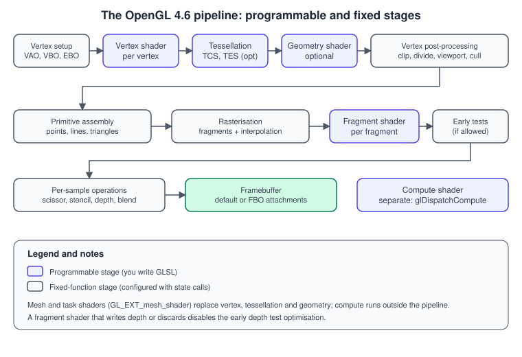
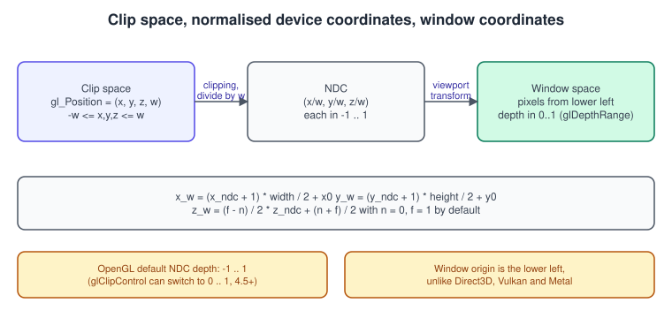
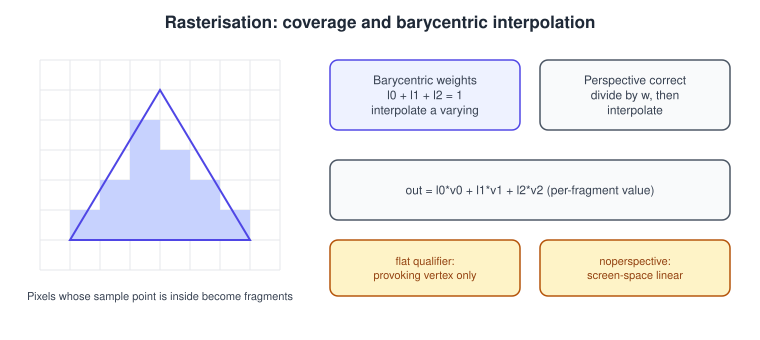
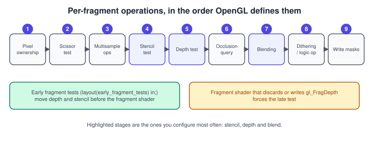

The OpenGL Rendering Pipeline
|
This content was generated with the assistance of AI and should be verified against the official documentation before being relied on in production. |
OpenGL is a specification of a pipeline: a fixed order of stages that turns vertex data into pixels. A draw call such as
glDrawElements pushes vertices into the front of the pipeline and the pixels come out of the back, written into a framebuffer.
Some stages run programs that you write in GLSL (shaders), the others are fixed in the hardware and controlled with state calls
(glEnable, glCullFace, glBlendFunc and so on). Knowing which is which, what each stage consumes and produces, and which call
controls it, is what lets you debug a missing triangle or a wrongly blended pixel without guessing.
The facts were checked in November 2026. The versions documented are OpenGL 4.6 (GLSL 4.60, specification revision of 2022) and OpenGL ES 3.2 (GLSL ES 3.20); each stage’s entry says in which version it appeared, because the stages available differ: OpenGL ES 2.0 has only the vertex and fragment shader, ES 3.1 adds compute, ES 3.2 adds tessellation and geometry. Desktop OpenGL on macOS stops at 4.1 and so has no compute shader. The page is the OpenGL-specific companion to the API-neutral The Rendering Pipeline and shows the names that every other API gives the same stages in that page’s comparison figure. The example code is C++20 with glad2 and GLFW, as set up in Getting Started on Desktop.
The pipeline at a glance

| Stage | Programmable | Appeared in | Controlled by |
|---|---|---|---|
Vertex specification |
no (state and buffers) |
always |
VAO, VBO and index buffer; see Buffers and Vertex Specification |
Vertex shader |
yes |
2.0 (ES 2.0) |
|
Tessellation control and evaluation shaders |
yes (the tessellator between them is fixed) |
4.0 (ES 3.2) |
|
Geometry shader |
yes |
3.2 (ES 3.2) |
|
Transform feedback (capture) |
no |
3.0 (ES 3.0) |
|
Vertex post-processing (clip, divide, viewport, cull) |
no |
always |
|
Primitive assembly and rasterisation |
no |
always |
|
Fragment shader |
yes |
2.0 (ES 2.0) |
|
Per-sample operations (scissor, stencil, depth, blend, write masks) |
no |
always |
|
Compute shader |
yes, outside the graphics pipeline |
4.3 (ES 3.1) |
|
Stages 3 and 4 (tessellation and geometry) are optional: a program that has only a vertex and a fragment shader skips them. The general concepts behind every row are in The Rendering Pipeline; the more unusual stages are covered in Advanced Pipeline Stages and the GPU’s view of the work in GPU Architecture Basics.
Stage 1: vertex specification and input assembly
Vertex specification is the setup of the data that enters the pipeline: a VAO with attribute formats, one or more VBOs, and an
optional element (index) buffer. A draw call (glDrawArrays, glDrawElements and their variants) provides the primitive type and
how many vertices to process. The pipeline fetches attributes from the buffers, converts them according to their declared format
(for example, normalising bytes to floats) and presents them to the vertex shader as its in variables.
Details such as interleaving, strides, index types and primitive restart are in Buffers and Vertex Specification. The first complete example is Hello Triangle.
Stage 2: the vertex shader
The vertex shader runs once per input vertex (drivers cache results of indexed vertices, so a vertex shared by several triangles is
processed at most once in the cache). It reads its attributes and outputs the vertex position in clip space in the built-in
gl_Position, plus any other values the later stages need. It cannot read other vertices, create new ones or discard one;
those jobs belong to the geometry and tessellation stages.
In its simplest form the vertex shader multiplies the position by one combined matrix:
\[ \mathbf{ p }_{ clip } = P \, V \, M \, \mathbf{ p }_{ object } \]
Here \( M \) is the model matrix (object to world), \( V \) is the view matrix (world to camera) and \( P \) is the
projection matrix (camera to clip). See Coordinate Systems and
Transforms and Vectors, Matrices and Homogeneous Coordinates.
Built-in inputs include gl_VertexID, gl_InstanceID and gl_DrawID (4.6); built-in outputs include gl_Position,
gl_PointSize and gl_ClipDistance[].
#version 460 core
layout(location = 0) in vec3 aPosition;
layout(location = 1) in vec3 aNormal;
layout(location = 2) in vec2 aUv;
layout(std140, binding = 0) uniform Camera {
mat4 uView;
mat4 uProjection;
};
uniform mat4 uModel;
out VS_OUT {
vec3 worldPos;
vec3 normal;
vec2 uv;
} vs;
void main() {
vec4 world = uModel * vec4(aPosition, 1.0);
vs.worldPos = world.xyz;
vs.normal = mat3(transpose(inverse(uModel))) * aNormal; // fine for a demo; precompute on the CPU in real code
vs.uv = aUv;
gl_Position = uProjection * uView * world;
}Stage 3: tessellation (optional)
Tessellation turns a coarse patch into many small triangles on the GPU, so that a low-polygon mesh can be refined by a height map
or a curve without storing the dense geometry. It is three sub-stages, enabled when the bound program contains the two
programmable ones and the draw mode is GL_PATCHES:
-
The tessellation control shader (TCS) runs once per output control point of a patch. It transforms the control points and sets the tessellation levels: how many segments the patch’s outer edges (
gl_TessLevelOuter) and interior (gl_TessLevelInner) are cut into. -
The tessellator is a fixed-function stage. It generates a set of barycentric (or uv) coordinates over a triangle, quad or isoline domain, spaced according to the levels and to the spacing mode (
equal_spacing,fractional_even_spacing,fractional_odd_spacing). -
The tessellation evaluation shader (TES) runs once per generated point. It receives the coordinate (
gl_TessCoord) and the patch’s control points and computes the final vertex position, for example by interpolating a Bezier surface and adding a displacement texture lookup.
The number of vertices per patch is set with glPatchParameteri(GL_PATCH_VERTICES, n); glPatchParameterfv sets default
tessellation levels for programs without a TCS. The maximum level is queried with GL_MAX_TESS_GEN_LEVEL (at least 64).
Tessellation is available in desktop OpenGL 4.0 and OpenGL ES 3.2 (or GL_EXT_tessellation_shader on ES 3.1 devices). macOS, which stops at 4.1, has tessellation
and geometry shaders but not compute shaders. Details and an example are in
Geometry and Tessellation Shaders.
Stage 4: the geometry shader (optional)
A geometry shader runs once per primitive (point, line or triangle, optionally with adjacency information) and may emit zero or
more primitives of a possibly different kind: EmitVertex() and EndPrimitive() produce them, layout(max_vertices = n) out
bounds the output. Typical uses are generating a quad from a point (sprites), extruding silhouette edges, or sending a triangle to
one of several layers of a framebuffer with gl_Layer (for cube map or cascaded shadow map rendering in a single pass). Geometry
shaders appeared in desktop OpenGL 3.2 and in OpenGL ES 3.2.
They are a poor fit for GPUs when they amplify geometry, since the order of the emitted primitives must be preserved and the output size is not known in advance. In practice, instancing, compute shaders or mesh shaders (below) are usually faster for the same job.
Stage 5: vertex post-processing
Between the last vertex-processing stage and the rasteriser a fixed sequence of operations converts the clip-space position into a pixel position. This is where most "my triangle is in the wrong place" bugs live, so it is worth knowing each step.

-
Clipping. Primitives are clipped against the volume \( -w \le x, y, z \le w \) (by default; see
glClipControlbelow), plus any user clip planes enabled withgl_ClipDistance[]andGL_CLIP_DISTANCE0. A triangle that straddles the boundary is cut and new vertices are generated at the intersection. A vertex with \( w \le 0 \) is behind the camera and clipping removes it, which is why the divide never sees zero. -
Perspective division. Each remaining vertex is divided by its own \( w \): \( x_{ ndc } = x / w \), \( y_{ ndc } = y / w \), \( z_{ ndc } = z / w \). The result is in normalised device coordinates (NDC). The \( 1/w \) value is kept for perspective-correct interpolation.
-
Viewport transform. NDC x and y map to window pixels using
glViewport(x, y, width, height)and depth maps to a window depth usingglDepthRange(near, far):\[ x_w = \frac{ width }{ 2 } (x_{ ndc } + 1) + x_0, \qquad y_w = \frac{ height }{ 2 } (y_{ ndc } + 1) + y_0, \qquad z_w = \frac{ f - n }{ 2 } z_{ ndc } + \frac{ n + f }{ 2 } \]
with the defaults \( n = 0 \) and \( f = 1 \). The window origin is the lower left. Several viewports (and scissor boxes) can be active at once with
glViewportIndexedfandgl_ViewportIndex(4.1). -
Face culling. With
glEnable(GL_CULL_FACE)the pipeline discards triangles whose screen-space winding matches the face given byglCullFace(defaultGL_BACK), whereglFrontFace(defaultGL_CCW) defines which winding is the front.
NDC in OpenGL spans -1 to 1 on all three axes, which differs from Direct3D, Metal and Vulkan (z from 0 to 1). OpenGL 4.5 adds
glClipControl to change both the origin and the depth range:
// OpenGL 4.5 (GL_ARB_clip_control): upper-left origin and 0..1 clip depth, as Vulkan and Direct3D.
glClipControl(GL_UPPER_LEFT, GL_ZERO_TO_ONE);
// With GL_ZERO_TO_ONE the clip volume is 0 <= z <= w, and a "reversed-Z" depth buffer becomes precise:
glClearDepth(0.0);
glDepthFunc(GL_GREATER);
glClear(GL_DEPTH_BUFFER_BIT);Reversed-Z (mapping the near plane to 1 and the far plane to 0, with a floating-point depth buffer) gives far more even depth
precision than the default mapping; glClipControl is the standard way to enable it in OpenGL. The projection matrix side is in
Cameras and Projection. The conventions of each API are compared in
Coordinate Spaces and Transforms.
Stage 6: primitive assembly and rasterisation
Primitive assembly groups the vertices into points, lines or triangles according to the draw mode. Rasterisation then decides which pixels each primitive covers and generates one fragment per covered sample position.

For a triangle, a pixel produces a fragment when its sample point (the pixel centre, or each sample position when multisampling) is inside the triangle, with a tie-breaking rule on shared edges so that a pixel on the edge between two triangles is drawn exactly once. Every vertex output of the last vertex-processing stage is then interpolated across the triangle with barycentric coordinates \( \lambda_0, \lambda_1, \lambda_2 \) that sum to 1:
\[ v = \lambda_0 v_0 + \lambda_1 v_1 + \lambda_2 v_2 \]
The default is perspective-correct interpolation, which divides each value by \( w \) before interpolating linearly in screen space and
multiplies it back after, so that texture coordinates do not swim on slanted surfaces. Interpolation qualifiers on the shader
variables change this: flat (no interpolation; the value of the provoking vertex is used, the last vertex by default and
configurable with glProvokingVertex), noperspective (linear in screen space), smooth (the default) and centroid or sample
(change the position within the pixel at which the value is evaluated, to avoid extrapolation at multisampled edges).
State that affects rasterisation:
| Call | Effect | Notes |
|---|---|---|
|
Draw triangles as outlines or points |
Desktop only, not in OpenGL ES. Useful for wireframe debugging. |
|
Line width in pixels |
Widths above 1.0 are not guaranteed to be supported in a core profile; use a geometry shader or triangle strips for thick lines. |
|
Point size in pixels |
Per vertex size needs |
|
Use several coverage samples per pixel |
Needs a multisampled framebuffer, see Antialiasing and HDR. |
|
Biases depth slightly |
Used to avoid z-fighting for decals and shadow maps. |
|
Stops the pipeline before rasterisation |
Used with transform feedback to run only the vertex stages. |
Stage 7: the fragment shader
The fragment shader runs once for every fragment and produces the colour (and optionally the depth) of that fragment. It reads the
interpolated inputs from the vertex stage, samples textures with texture(sampler, uv), evaluates the lighting and writes one or
more outputs. Outputs are numbered with layout(location = n) out vec4 name, and map to colour attachments of the current
framebuffer; with multiple render targets, one shader writes several. A fragment may also be thrown away with discard (alpha
testing) or write its own depth in gl_FragDepth. A fragment shader has implicit derivatives (dFdx, dFdy, fwidth) because
neighbouring fragments run in lock-step in groups of four (a quad), which texture filtering also relies on.
#version 460 core
in VS_OUT {
vec3 worldPos;
vec3 normal;
vec2 uv;
} fs;
layout(binding = 0) uniform sampler2D uCover;
layout(location = 0) out vec4 fragColor;
void main() {
vec4 base = texture(uCover, fs.uv);
if (base.a < 0.5) discard; // alpha test, also disables early depth test unless declared
fragColor = vec4(base.rgb * max(dot(normalize(fs.normal), vec3(0.0, 1.0, 0.0)), 0.1), base.a);
}Stage 8: per-sample operations and the framebuffer

After the fragment shader each fragment goes through a fixed sequence, defined by the specification: pixel ownership test,
scissor test (glScissor with GL_SCISSOR_TEST), multisample operations, stencil test (glStencilFunc, glStencilOp),
depth test (glDepthFunc, with glEnable(GL_DEPTH_TEST) and glDepthMask), occlusion query counting, blending
(glBlendFunc, glBlendEquation), dithering and logic op, and finally the write masks (glColorMask, glDepthMask,
glStencilMask). The results are written to the framebuffer: either the default one provided by the window system or a
framebuffer object. The stages themselves are explained in
Blending, Depth and Stencil, and the destination in
Framebuffers and Render to Texture.
Early fragment tests. The logical order puts depth and stencil after the fragment shader, but doing the test first saves
running the shader for hidden fragments. The GPU may run the depth test early as long as the result is the same, which holds unless
the shader discards, writes depth or writes to images and buffers. layout(early_fragment_tests) in; (4.2, ES 3.1) forces early
testing even then, and layout(depth_greater) out float gl_FragDepth; (and depth_less, depth_any, depth_unchanged) tell the
driver how the shader modifies depth, so that early rejection still works. Overdraw and the cost of the fragment shader are the
most common GPU bottleneck on mobile hardware; the tile-based architecture is covered in
Performance.
State that is not part of the pipeline (and does not appear in the figure) includes the textures bound to units, sampler objects, uniforms and buffer bindings: they are inputs to the shaders, selected by the program and the binding points; see Uniforms, UBOs and SSBOs.
Compute shaders: outside the pipeline
A compute shader is a program with no fixed input and output: it is launched with glDispatchCompute(x, y, z) as a grid of
work groups, and reads and writes buffers and images arbitrarily. It does not belong to the graphics pipeline and runs between draw
calls on the same queue, which is why a glMemoryBarrier is needed before the draw reads what it wrote. Compute shaders arrived in
desktop OpenGL 4.3 and OpenGL ES 3.1. They are described in Compute Shaders; the
Bookshelf GL dust particles at the end of the series use one.
Mesh and task shaders in OpenGL
Mesh and task shaders replace the vertex, tessellation and geometry stages with a compute-like front end that produces small
batches of vertices and primitives (meshlets) straight from buffers, and the pipeline continues with rasterisation. They arrived
in OpenGL through the GL_EXT_mesh_shader extension, which was added to the Khronos registry in October 2025. It brings to OpenGL a
model that Vulkan (VK_EXT_mesh_shader), Direct3D 12 and Metal already had. Because it is an extension, support depends on the
vendor and the driver: check for it at run time. See Mesh Shaders and the neutral
overview in Advanced Pipeline Stages.
Draw call checklist
A program with the right stages bound and the state below produces output. The following example sets up everything a typical opaque draw in the Bookshelf GL scene needs, with a comment saying which pipeline stage each call configures.
// Per frame, before drawing opaque geometry. Context: OpenGL 4.1 core or later.
int fbw, fbh;
glfwGetFramebufferSize(window, &fbw, &fbh);
glViewport(0, 0, fbw, fbh); // stage 5: viewport transform
glDepthRange(0.0, 1.0); // stage 5: window depth range (the default)
glEnable(GL_CULL_FACE); // stage 5: face culling
glCullFace(GL_BACK);
glFrontFace(GL_CCW); // winding that counts as front
glEnable(GL_DEPTH_TEST); // stage 8: depth test
glDepthFunc(GL_LESS);
glDepthMask(GL_TRUE); // stage 8: write masks
glDisable(GL_BLEND); // stage 8: blending (opaque pass)
glDisable(GL_STENCIL_TEST);
glDisable(GL_SCISSOR_TEST);
glClearColor(0.10f, 0.11f, 0.14f, 1.0f);
glClearDepth(1.0);
glClear(GL_COLOR_BUFFER_BIT | GL_DEPTH_BUFFER_BIT);
glUseProgram(program); // stages 2 and 7: the shaders
glBindVertexArray(bookVao); // stage 1: vertex specification
glDrawElements(GL_TRIANGLES, indexCount, GL_UNSIGNED_SHORT, nullptr);Source: OpenGL 4 reference: glEnable
The same pipeline in OpenGL ES
| Feature | OpenGL ES 2.0 | ES 3.0 | ES 3.1 | ES 3.2 |
|---|---|---|---|---|
Vertex and fragment shader |
yes |
yes |
yes |
yes |
Vertex array objects, instancing, multiple render targets, transform feedback, uniform buffers |
extensions only |
yes |
yes |
yes |
Compute shader, shader storage buffers, image load and store |
no |
no |
yes |
yes |
Geometry and tessellation shaders |
no |
no |
extensions only |
yes |
Debug output ( |
extension |
extension |
extension |
yes |
The stage order is the same. Precision qualifiers (lowp, mediump, highp) are required for the fragment shader’s default float
type; they are covered in GLSL ES and Portability.
Common mistakes
-
Looking for a missing object in the wrong stage. A triangle that never appears is usually one of: culled (winding), clipped (outside the \( -w \) to \( w \) volume or behind the camera), zero area after the viewport transform, or rejected by the depth test (wrong
glDepthFuncor a cleared depth of 0). RenderDoc’s pipeline view shows the output of each stage; see Debugging and Tools. -
Forgetting that
gl_Position.wis not 1 after a projection. Do the divide by w only in the pipeline, and never rely ongl_Position.zbeing in the 0..1 range under default clip control. -
Interpolating normals and not renormalising them in the fragment shader. Interpolated unit vectors are shorter than unit length.
-
Using discard and leaving early depth on. Without
early_fragment_tests, a shader that candiscarddisables early depth rejection on many GPUs, so a heavy fragment shader runs for hidden fragments. -
Enabling blending and keeping depth writes. Transparent geometry written to the depth buffer hides what is behind it; draw it last, sorted, with
glDepthMask(GL_FALSE). See Transparency, Blending and Post-processing. -
Assuming a fragment is a pixel. With multisampling or overlapping geometry, several fragments contribute to one pixel.
Performance notes
-
The vertex shader cost scales with the number of unique vertices; the fragment shader cost scales with the number of covered pixels times overdraw. Draw opaque geometry front to back (or use a depth pre-pass) so that early depth rejection helps.
-
Geometry shaders that amplify output are slower than instancing on most hardware. Avoid them for high-volume work.
-
Tessellation levels must be bounded; the cost grows with the square of the level for triangles.
-
Each change of program or framebuffer drains part of the GPU’s pipeline: sort by program, then texture, then geometry (Performance and Profiling).
-
On tile-based mobile GPUs, per-fragment work is deferred until the visibility of the whole tile is known, so overdraw behaves differently from desktop; blending and
discardstill cost.
Where older material is outdated
| Older material says | Today |
|---|---|
The pipeline is vertex transformation, then the fixed-function lighting, texturing and fog stages (SuperBible 4th edition, early chapters) |
Lighting, texturing and fog are written in shaders. The fixed-function stages for them were removed from the core profile in OpenGL 3.1 and 3.2 (2009). |
OpenGL has a vertex and a fragment stage only (ES 2.0 Programming Guide) |
Core 4.6 and ES 3.2 add tessellation, geometry and compute stages and, as an extension, mesh shaders. |
The ES 2.0 pipeline without transform feedback, instancing or multiple render targets |
ES 3.0 (2012) added them; see the table above. |
Selection and feedback render modes ( |
Removed in core. Use an ID buffer or ray casting (see Text, UI and Input). |
Depth range -1 to 1 is fixed |
Still the OpenGL default, but |
References
-
OpenGL 4.6 core profile specification (registry): https://registry.khronos.org/OpenGL/index_gl.php
-
OpenGL ES 3.2 specification (registry): https://registry.khronos.org/OpenGL/index_es.php
-
OpenGL 4 reference pages: https://registry.khronos.org/OpenGL-Refpages/gl4/
-
glClipControl: https://registry.khronos.org/OpenGL-Refpages/gl4/html/glClipControl.xhtml
-
glViewport: https://registry.khronos.org/OpenGL-Refpages/gl4/html/glViewport.xhtml
-
glDepthRange: https://registry.khronos.org/OpenGL-Refpages/gl4/html/glDepthRange.xhtml
-
OpenGL Shading Language 4.60 specification: https://registry.khronos.org/OpenGL/specs/gl/GLSLangSpec.4.60.html
-
OpenGL Wiki, Rendering Pipeline Overview: https://wikis.khronos.org/opengl/Rendering_Pipeline_Overview
-
Khronos news, OpenGL resurges in 2025 with mesh shader extensions: https://www.khronos.org/news/archives/opengl-resurges-in-2025-with-mesh-shader-extensions-for-gaming
-
OpenGL SuperBible, 4th edition (publisher page): https://www.informit.com/store/opengl-superbible-comprehensive-tutorial-and-reference-9780321498823
-
OpenGL ES 2.0 Programming Guide (publisher page): https://www.informit.com/store/opengl-es-2.0-programming-guide-9780321502797
-
OpenGL ES 3.0 Programming Guide (publisher page): https://www.informit.com/store/opengl-es-3.0-programming-guide-9780321933881